Examples
Fourteen complete shells, each in one file. Run one from a clone of the repository, then copy what you need into your own config.
$ git clone https://github.com/w0x7y/crabshell
$ cd crabshell
$ cargo run --release -p crabshell --example counter
Replace counter with any name below, and stop your own
bar first, or the two will stack. The pictures are the test suite's
reference screenshots, drawn by Crabshell on a headless Sway.
| Example | What it is | Start here if you want |
|---|---|---|
| counter | A bar with a button that counts | The smallest working shell |
| bar | Workspaces, tray, volume and clock | A bar for Sway |
| hyprland | Workspaces and the focused window's title | A bar for Hyprland |
| launcher | A search field over a filtered list | Keyboard input and long lists |
| effects | Gradients, blur, fades and a sliding indicator | Styles that move |
| desktop | Media, network, Bluetooth, battery, and toasts | The desktop services |
| motion | A volume display, a spinner, sliding toasts | Timers and animation |
| control | A slider, chips, a calendar, a notification list | A control center |
| dashboard | A battery ring, a CPU graph, a media card, a wallpaper | Drawing and images |
| notes | Notifications with markup and links, a clock, a quick note | Text |
| system | Weather, stats, brightness, clipboard and wallpapers | Outside data, for niri or Sway |
| overview | Applications, open windows with live pictures | An overview or a dock |
| lock | A lock screen checked by PAM | A lock screen |
| greeter | A login screen for greetd | A greeter |
counter
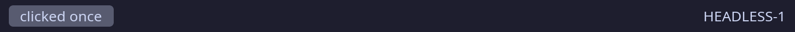
One panel per monitor, with a button that counts its clicks and the monitor's name at the right. It uses no services, and the count survives a reload.
It shows per_output, a signal, a binding,
hover_style and
cx.persist, in 46 lines.
Read the source.
bar
Sway's workspaces at the left, and the tray, the volume and the clock
at the right. Scroll over the volume to change it and click it to
mute. This is the file crabshell init writes, and
Your first bar builds it line by line.
It shows cx.sway(), children_keyed, the
Tray widget,
cx.audio() and
cx.clock.
Read the source.
hyprland
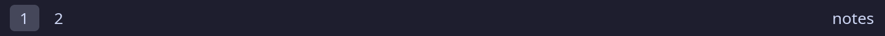
A bar for Hyprland, with each monitor's workspaces at the left and the focused window's title at the right. Urgent workspaces turn red, special workspaces are left out, and a click switches.
It shows
cx.hyprland() and
how to name a workspace for focus_workspace.
Read the source.
launcher
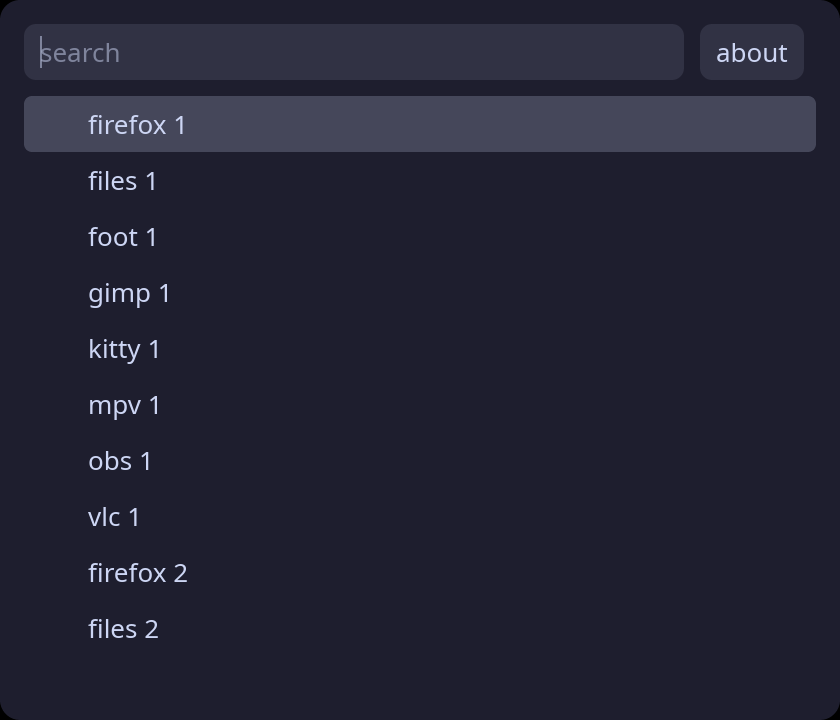
A box in the middle of every monitor that takes the keyboard. Type to filter, press Up and Down to pick, and Enter to launch. An about button opens a floating window.
It shows KeyboardFocus::Exclusive,
TextInput, a window's on_key, a memo that filters,
ListView with
current, and a
FloatingWindow.
Read the source.
effects
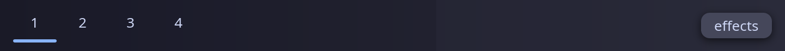
A translucent gradient bar that asks the compositor to blur what is behind it. Its tabs fade in a hover color, an indicator slides under the picked tab, and a card casts a soft shadow.
It shows gradients,
shadows, a style's
transition, cx.animate and
blur.
Read the source.
desktop
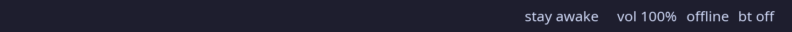
A bar with what plays, the volume, the network, Bluetooth, the battery and the power profile. A button keeps the screen awake, and an "away" mark shows after five minutes without input. The shell is the notification server here, and new notifications show as toasts.
It shows six desktop services,
cx.idle_monitor, inhibit_idle, two windows per monitor, and a window
mask that follows its
content.
Read the source.
motion
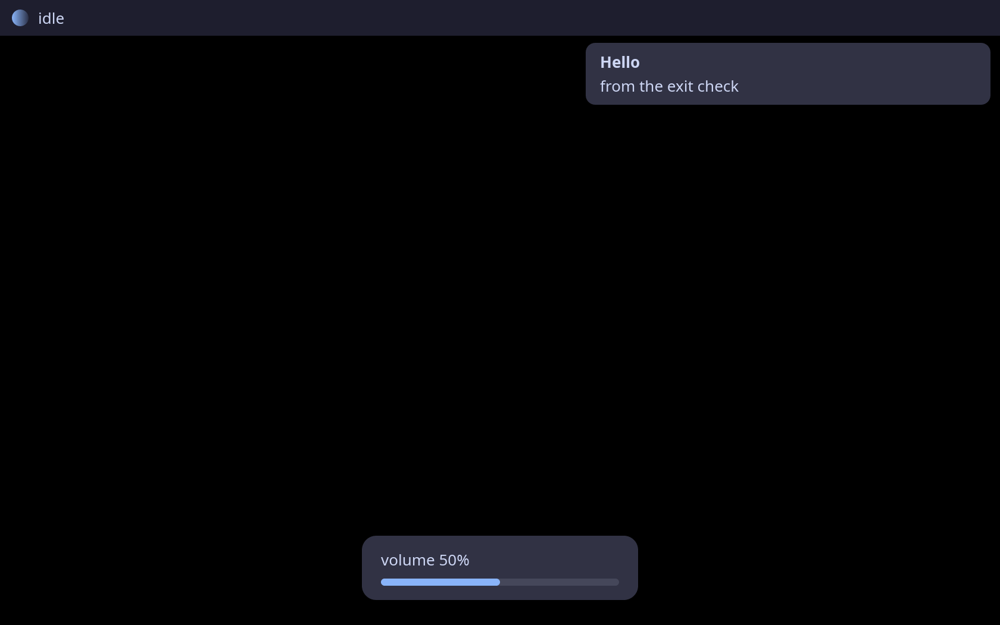
A volume display slides up when the volume changes and hides 1.5 s after the last change. A spinner in the bar turns while a program runs, and notifications slide in and out at the top right.
$ crabshell ipc motion run sleep 3
$ crabshell ipc osd pin
It shows cx.after as a
debounce,
cx.animation with
running(),
cx.cycle, transforms, and
exit with
cx.leaving().
Read the source.
control
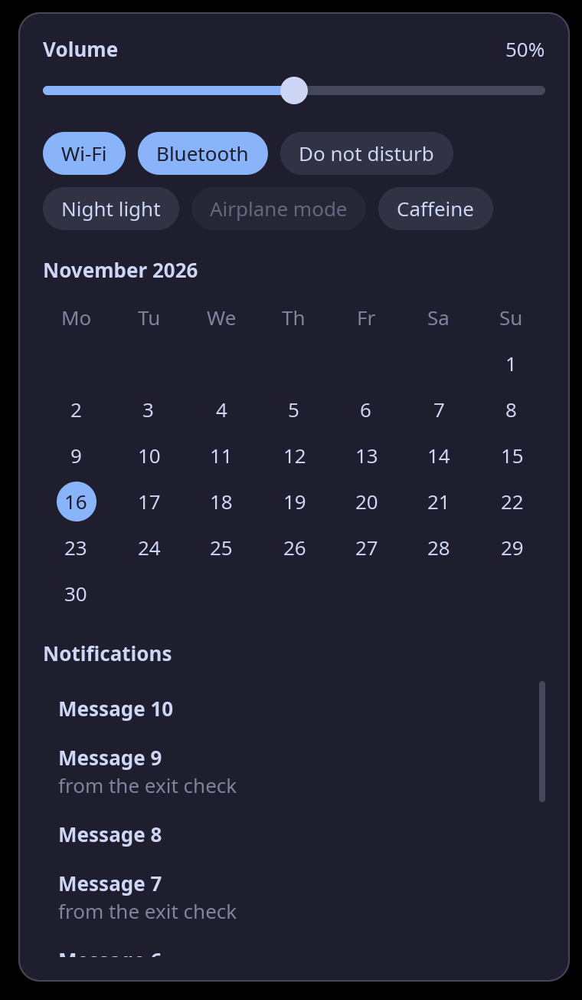
A control center in the top right corner, with a volume slider, quick-setting chips that wrap, this month's calendar and the notification history in a list that flings.
It shows a Slider bound
to an outside value, wrap, a Grid with a spanned
cell, enabled(false), and a ListView with
highlight and scroll_bar.
Read the source.
dashboard
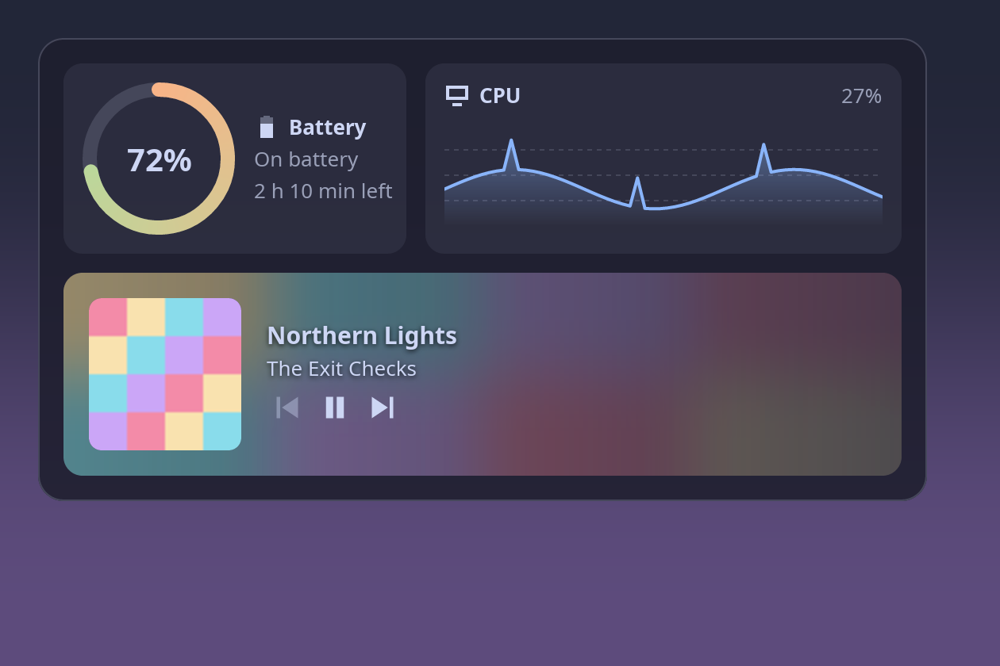
A dashboard over the wallpaper. The battery is a ring and the CPU's last minute is a graph, both drawn on a canvas. The media card shows the album art in front of a blurred, darkened copy, and the wallpaper crossfades when you set a new one.
$ WALLPAPER=~/Pictures/hills.jpg cargo run --release -p crabshell --example dashboard
$ crabshell ipc dashboard toggle
$ crabshell ipc wallpaper set ~/Pictures/lake.jpg
It shows Canvas, sweep gradients, tinted symbolic icons,
image filters, a gradient
mask, a content shadow,
image transitions and
sampling /proc on an interval only while shown.
Read the source.
notes
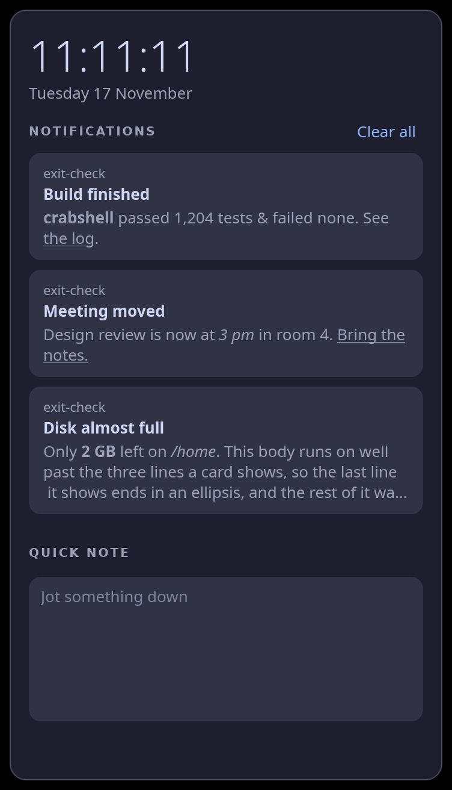
A notification center. Each body's markup becomes styled text with links that open in your browser, the clock's digits keep one width so it doesn't jitter, and the quick note is a multi-line editor whose text survives a reload.
$ cargo run --release -p crabshell --example notes
$ notify-send "Build finished" "<b>crabshell</b> passed. See <a href='https://example.org'>the log</a>."
It shows Text::rich with
parse_markup and on_link, eliding,
tabular digits and letter spacing,
text_align, line_height and a
TextArea kept with
cx.persist.
Read the source.
system
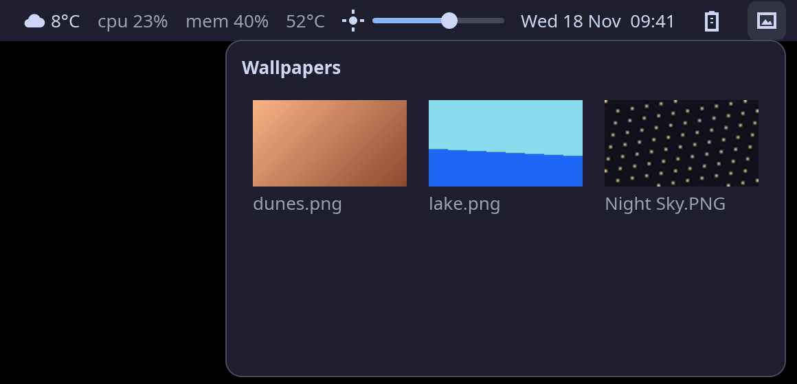
A bar that reads the world outside the shell: niri's workspaces when niri runs and Sway's otherwise, the weather fetched over HTTP, CPU, memory and a temperature, a brightness slider and a localized date. One popup holds the clipboard's history, and a wallpaper picker lists a folder whose pictures drag out to other programs.
$ WALLPAPERS=~/Pictures/Wallpapers cargo run --release -p crabshell --example system
It shows cx.http_get, cx.system_stats, cx.brightness, cx.clipboard, cx.folder_view, cx.niri and
drag_content.
Read the source.
overview
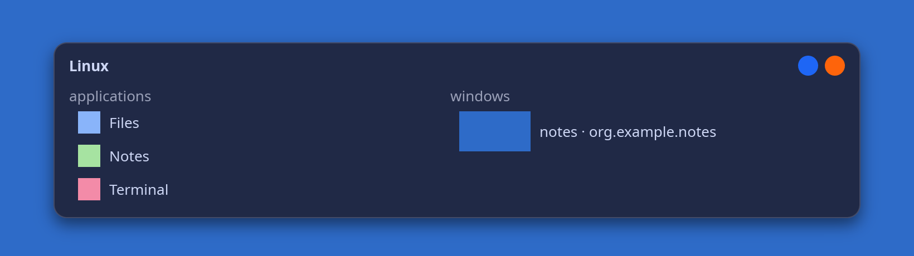
An overview that the command line opens and closes. It lists the installed applications with recent ones first, the open windows with a live picture of each, and the wallpaper's main colors. While closed it has no window at all.
$ crabshell ipc overview toggle
It shows cx.ipc,
cx.desktop_entries(), cx.toplevels(),
ScreencopyView, cx.process,
cx.quantize_colors, cx.json_file, and a child context disposed
on close.
Read the source.
lock
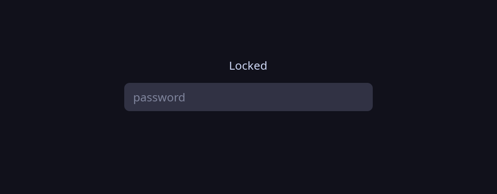
A lock screen. Every monitor shows a password field, and Enter checks the password with PAM. Try it in a nested compositor first.
$ crabshell ipc lock on
It shows
cx.session_lock, cx.pam, a password TextInput, and a lock that
survives a crash.
Read the source.
greeter
A login screen for greetd. One field on every monitor asks for a user name, then for whatever greetd asks. Once the user is authenticated it starts the session and exits. greetd starts it inside a compositor such as cage, so it doesn't run from a terminal like the others.
It shows cx.greetd(), a full-screen panel with KeyboardFocus::Exclusive, and
cx.exit.
Read the source.